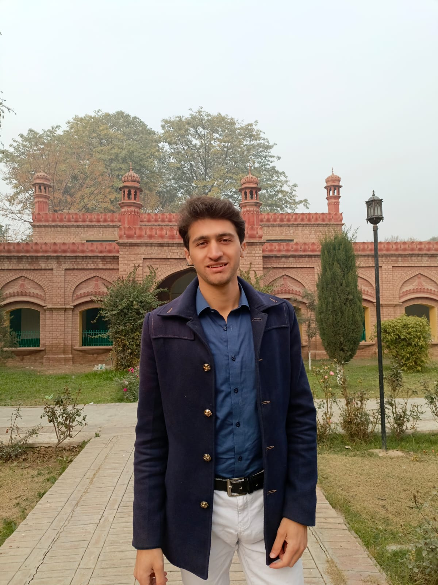

My name is Fawad Ahmad, and I hail from Hangu, Pakistan. Currently pursuing a Bachelor's degree in Computer Science (BSCS) at Peshawar, I am a dedicated and motivated student with a passion for technology and innovation. At the age of 21, I am driven by a desire to make a positive impact in the field of technology and contribute to the advancement of my country.
Having grown up in Hangu, I have developed a strong sense of community and a deep appreciation for my cultural heritage as a member of the Orakzai tribe. I am fluent in multiple languages, including Pashto, Urdu, and English, allowing me to effectively communicate and connect with diverse audiences.
With a keen interest in technology, I am constantly seeking opportunities to expand my knowledge and skills in areas such as software development, programming languages, and emerging technologies. I am particularly enthusiastic about leveraging technology to address real-world challenges and create innovative solutions that improve lives and empower communities.
As I continue my journey in Computer Science, I am committed to furthering my education and exploring new opportunities for growth and development. I aspire to contribute to the development of cutting-edge technologies that have a meaningful impact on society, while also striving to be a positive role model and mentor for future generations of technologists.
| Education Background | ||||
|---|---|---|---|---|
| Name | Class | Year | Marks | Institute name |
| Fawad Ahmad | Matric | 2018 | 907 | WIST School |
| Fsc | 2020 | 854 | HIST College | |